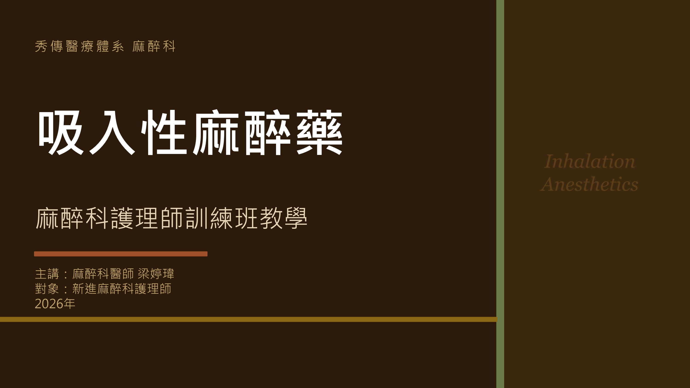

秀傳醫療體系 麻醉科
吸入性麻醉藥 教學駕駛艙
0%
吸入性麻醉藥
第 1 / 30 張

◀ 上一張
下一張 ▶
📊
主題資訊圖表
📺
教學影片
點擊前往 YouTube 觀看
↗ 開新分頁
✏️ 更換影片連結
更新
📝
學習成效測驗
共 13 道題目，涵蓋吸入性麻醉藥核心知識。答題後可查看詳解與對應投影片。
📋 13 題
⏱ 預計 10 分鐘
🎯 點選選項即作答
0 / 13
答對題數
🔄 重新作答